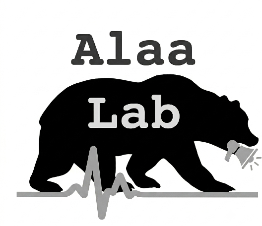
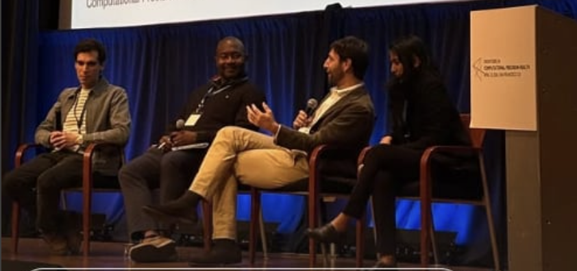

News
Lab updates, latest research, awards, and announcements.
Jun 2026

- New paper in Nature by Alex on ECG-based biomarkers for sudden cardiac death!
- Congratulations to Jenna Fields and Franny Dean on passing the qual exam! 🎉🎓
- Congratulations to Jivat Kaur for receiving a Stellar Abstract Award at STAI-X 2026! 🏆
- Franny Dean presents her work on AI surrogates for causal effect estimation in ASCO!
- 📣 Announcement: We're excited to share ER-Reason, a new dataset of 25K+ de-identified, real clinical notes on PhysioNet, covering the entire emergency care workflow. For a subset of the data, we also introduce benchmark items designed to evaluate clinical reasoning using script concordance test-style questions. Read our paper to learn more!
May 2026
- 📣 Announcement: In collaboration with Stanford University, we created CheXthought, a new dataset for training and evaluating medical VLMs! More than 100K visually grounded CoT traces from 50K chest X-rays, annotated by 500+ radiologists across 71 countries. CheXthought will be available here.
Apr 2026

- Our lab participated in the Frontiers in CPH conference with various talks and posters!

- Two papers accepted at ICML!
- Our lab is part of a team awarded a moonshot seed grant from the Laude Institute! 🏆
Mar 2026

- Nilo Golchini is admitted to the UC Berkeley - UCSF Joint Medical Program! Congrats to the first ever MD student in our lab!
Jan 2026
Congratulations to Zhongyuan Liang on the acceptance of his paper at AISTATS!
Nov 2025

- Our paper on medical disclaimers and safety messaging in LLMs was featured in the New York Times!
- Nikita's work on BioAgents is featured in a new Microsoft Research blog!
Sep 2025
- We received a $1 Million grant from the NIH Office of the Director and the Office of Data Science Strategy (ODSS)! The awarded project will develop post-training methods for multimodal foundation models! 🏆
Aug 2025
Congratulations to Nikita Mehandru on passing the qual exam! 🎉🎓
Jul 2025

- Our work on evaluating medical safety messaging in LLMs was featured in MIT Technology Review!
May 2025

- Ahmed received a 2025 Google Research Scholar Award! 🏆
- Our work on AI copilots for generating causal evidence with Maya Petersen, Mark van der Laan, Chris Holmes and Emre Kiciman was featured in a new Microsoft blog!
- Congratulations to Alex Schubert, Jivat Kaur, William Hou, and Zhongyuan Liang on passing the qual exam! 🎉🎓
Apr 2025
Two papers accepted at ICML! And our paper on the construct validity of medical LLM benchmarks was selected for an oral presentation!
Feb 2025
Congratulations to Jack Jedlicki for being admitted as a PhD student in the Computer Science Department at Harvard University!
Nov 2024
Our lab received an award from the NSF National AI Research Resource program!
Sep 2024
Congratulations to Alex Schubert on the selection of his paper as the featured article in the next issue of the IEEE Journal of Biomedical and Health Informatics!
Aug 2024
Ahmed Alaa and Travis Zack win a 2024 Marcus Program Award in Precision Medicine! 🏆
Jun 2024
Ahmed is selected as one of the 2024 Hellman Fellows! 🏆
May 2024
Congratulations to Jack Jedlicki for being awarded the La Caixa Foundation fellowship!
Jan 2024
- Congratulations to Yulu Gan on getting admitted to MIT EECS for his PhD!
- Congratulations to Marie Charpignon on joining the 2024 cohort of Delivery Science and Clinical Informatics Fellows by Kaiser Permanente!
Dec 2023
Congratulations to Nikita Mehandru for winning an outstanding paper award at EMNLP 2023!
Nov 2023
Congratulations to Nikita Mehandru for successfully passing her prelim exam!
Sep 2023
- Ahmed won an award from the "Accelerating Foundation Models Research" program by Microsoft! 🏆
- Our lab has three papers accepted to NeurIPS! One paper was selected for an Oral presentation and two papers selected as spotlight posters!
- Our first NIH grant got funded by NICHD! We will collaborate with the University of Botswana to build ML models for metabolic syndrome in infants with HIV and deploy them in hospitals in east Africa.